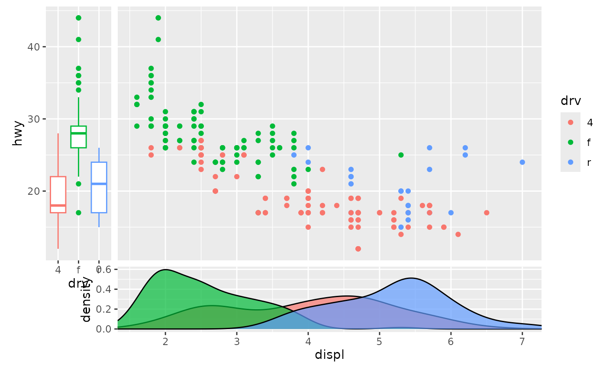
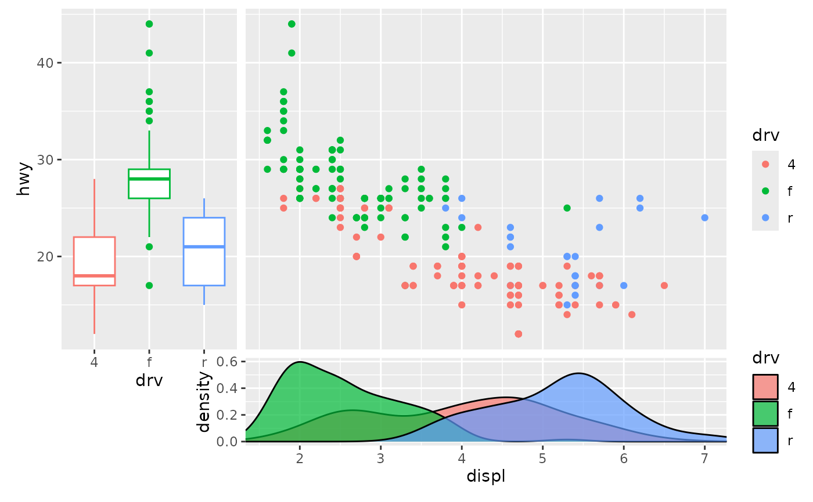
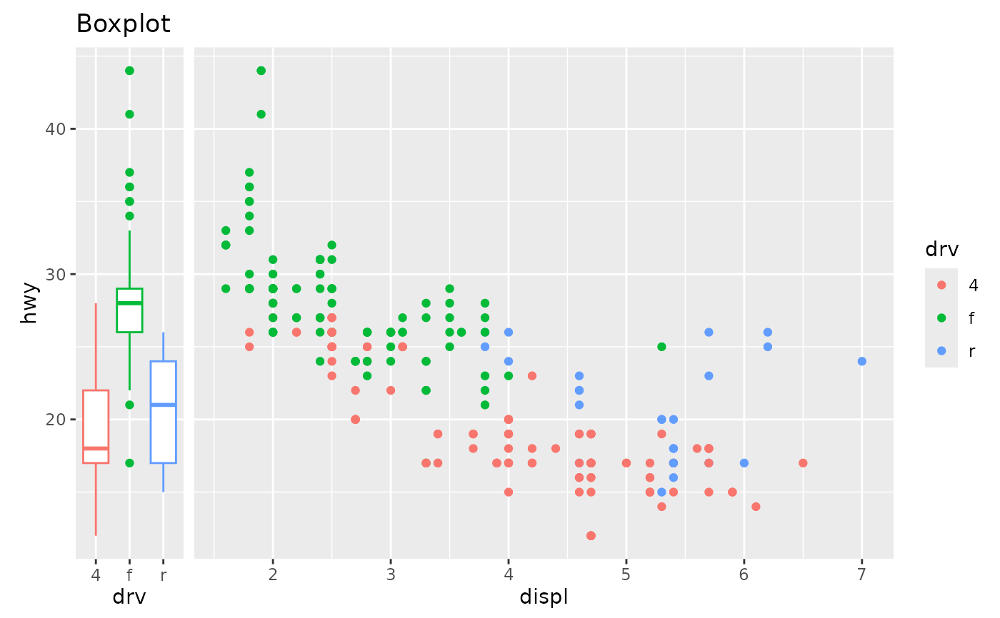
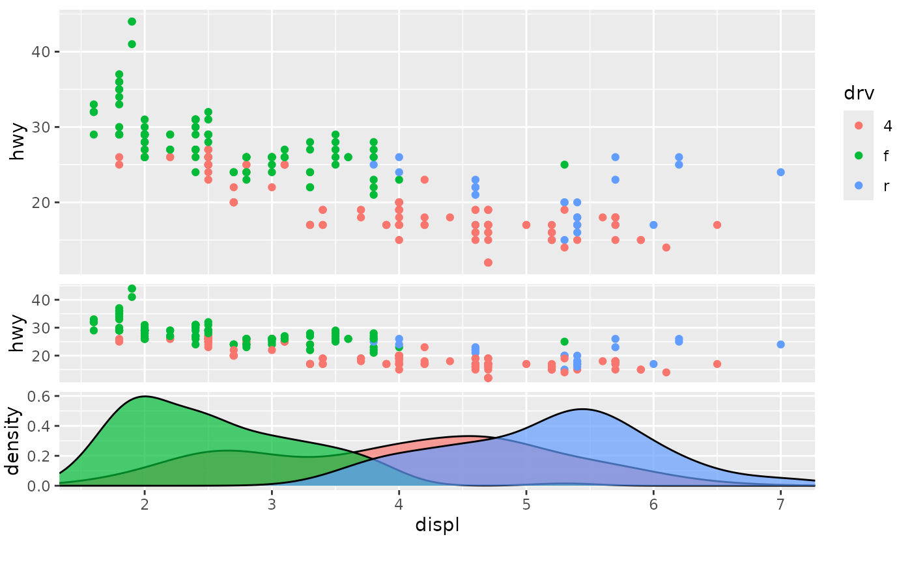

![[Experimental]](figures/lifecycle-experimental.svg)
Displays an axis-sharing plot to the side of the panel.
Usage
guide_axis_plot(
plot,
title = NULL,
size = unit(2, "cm"),
reposition = TRUE,
theme = theme_sub_legend(position = "none"),
position = waiver()
)Arguments
- plot
A
<ggplot>object, subject to limitations listed in the 'Details' section. Alternatively, a<function>that takes the scale as argument and returns a<ggplot>object.- title
One of the following to indicate the title of the guide:
A
<character[1]>or<expression[1]>to set a custom title.NULL(default) to not display any title.waiver()to take the name of the scale object or the name specified inlabs()as the title. Please note thatplotwill still display a title unless instructed otherwise. To avoid duplicated titles, the default is to have no title for the guide.
- size
An absolute
<unit>to set the size of theplotpanel in the orthogonal direction.- reposition
A
<logical[1]>. IfTRUE(default) thepositionargument of this guide will be propagated to the position scale bestowed upon theplotargument. IfFALSE, that position scale will retain its originalpositionfield. Settingreposition = TRUEwill generally tend to point axes outwards.- theme
A
<theme>object to style the guide individually or differently from the plot's theme settings. The order in which themes are applies is as follows: (1) the main plot's theme (2) theplotargument's theme and (3) thisthemeargument. The defaultthemeargument suppresses legends.- position
A
<character[1]>giving the location of the guide. Can be one of"top","bottom","left"or"right".
Details
This guide is subject to the following limitations:
The x- or y-scale of the main plot override the corresponding scale in the
plotargument. This ensures that the scales line up. Theplotargument should not have the relevant scale.The
plotargument cannot have custom facets. It must use the defaultfacet_null().This guide cannot be used in non-linear coordinate systems of the main plot and does not support non-linear coordinate systems in the
plotargument.The
theme(panel.widths, panel.heights)setting in theplotargument will be ignored in favour of thesizeargument.There is no mechanism to accommodate extra space needed by plot components outside the panel. This applies in the horizontal direction for x-axes and the vertical direction for y-axes. You may need to manually tweak the
theme(plot.margin)setting of the main plot to accommodate these components.
See also
Other standalone guides:
guide_axis_base(),
guide_axis_dendro(),
guide_axis_nested(),
guide_circles(),
guide_colbar(),
guide_colring(),
guide_colsteps(),
guide_legend_base(),
guide_legend_cross(),
guide_legend_group(),
guide_legend_manual()
Examples
# A standard plot
main_plot <- ggplot(mpg, aes(displ, hwy, colour = drv)) +
geom_point()
# Simple plot sharing the x-variable
x_plot <- ggplot(mpg, aes(displ, fill = drv)) +
geom_density(alpha = 0.7)
# Simple plot sharing the y-variable
y_plot <- ggplot(mpg, aes(drv, hwy, colour = drv)) +
geom_boxplot()
# Typical use
main_plot + guides(
x = guide_axis_plot(x_plot),
y = guide_axis_plot(y_plot)
)

main_plot + guides(
# Include `fill` legend by overriding theme
x = guide_axis_plot(x_plot, theme = NULL),
# Change the size of the side-plot
y = guide_axis_plot(y_plot, size = unit(4, "cm"))
)

# Components outside panels may need to be manually acommodated
main_plot +
guides(y = guide_axis_plot(y_plot + labs(title = "Boxplot"))) +
theme(plot.margin = margin(25, 5.5, 5.5, 5.5))

# Recursive use of this guide
main_plot + guides(x = guide_axis_plot(
main_plot + guides(x = guide_axis_plot(x_plot))
))
